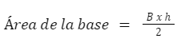

Unidad VI
6.3 Volumen
El volumen de un cuerpo es la cantidad de espacio que ocupa. Se caracteriza por tomar en cuenta tres dimensiones, a diferencia del área que solo toma en cuenta dos. El volumen se expresa en unidades cúbicas, las cuales básicamente suelen ser las mismas unidades usadas para la longitud pero elevada al cubo, lo que indica que una unidad cúbica representa un cubo cuyo lado mide una de esas mismas unidades.
A continuación se presentan algunos de los principales cuerpos geométricos y las fórmulas que nos ayudan a calcular su volumen.
Volúmenes de prismas
Un cubo es un prisma particular formado por seis caras cuadradas. Su volumen es el cubo de la longitud de la arista.
Podemos observar que al multiplicar arista por arista, solo dos veces, estamos calculando el área de una de las caras del cubo, y posteriormente se hace la multiplicación de la otra arista tomando esta como si fuera su altura.
Este razonamiento nos sirve para encontrar los volúmenes de la mayoría de prismas. Un prisma recto es un poliedro que tiene dos caras iguales y paralelas, llamadas bases y cuyas caras laterales son rectangulares. En general, para calcular el volumen de un prisma, se calcula el área de la base del prisma y se multiplica por la altura.
A continuación se muestran algunos ejemplos.
Se tiene el siguiente prisma triangular.
Para calcular su volumen se procede de la siguiente manera.
La fórmula para calcular el volumen de cualquier prisma es la siguiente.
Volumen=Área de la base x altura
La base de este prisma es un triángulo, por lo que el área de la base está dada por la siguiente fórmula.
Donde B es la base del triángulo y “h” la altura del triángulo.
Los datos que nos dan en la imagen son los siguientes.
B =4 cm
h =3 cm
Sustituimos la fórmula anterior.
Por lo que:
Área de la base = 6 cm2
Ahora ya podemos usar la fórmula del volumen.
Volumen = Área de la base x altura= 6 cm2 x 10 cm
Volumen = 60 cm3
Y de esta sencilla forma podemos calcular el volumen de cualquier prisma, solo hay que identificar que figura es la que actúa como base del prisma y cual es la fórmula para calcular el área de dicha figura.
Volumen de un cilindro.
El razonamiento anterior es aplicado también al cilindro. Un cilindro es un sólido que tiene dos bases circulares iguales contenidas en planos paralelos además tiene una altura h que es el segmento perpendicular a las dos bases. Entonces podemos calcular el volumen del cilindro con la misma fórmula que para los prismas, es decir multiplicando el área de la base por la altura.
La fórmula para calcular el volumen es la siguiente.
Volumen=Área de la base x altura
Por lo que hay que calcular el área de la base. La base es un círculo por lo que la fórmula para calcular su área es la siguiente.
Área de la base = Π r2
Sustituyendo en la formula del volumen, nos queda.
Volumen = Π r2 x altura
Por lo que para calcular el volumen de un cilindro solo hay que hacer uso de esta fórmula.
Volumen de un cono.
El cono es un sólido que se forma con una base en forma de círculo y un punto fuera del círculo llamado vértice. El eje del cono es el segmento de recta que va del vértice al centro de la base circular. La altura h del cono es el segmento perpendicular a la base que une a ésta con el vértice. Si el eje del cono es perpendicular a la base el cono se llama cono circular recto, mientras que si el eje no es perpendicular a la base el cono se llama cono oblicuo.
La fórmula para calcular el volumen de un cono es la siguiente.
Se puede observar que es similar a la fórmula para obtener el volumen de un cilindro, solo que aparece una división entre tres, debido a que el cono solo tiene una base.
La resolución es bastante similar a las anteriores, solo hay que identificar los datos, sustituir y operar.
Volumen de una esfera.
Una esfera es un sólido que está formado por todos los puntos en el espacio que están a una misma distancia de un punto fijo llamado centro de la esfera. Esta distancia se llama radio de la esfera. La figura siguiente muestra una esfera de radio r.

La fórmula para calcular el volumen de una esfera es la siguiente.

En este caso la fórmula solo depende del radio de la esfera, por lo que no hay muchos datos que identificar.